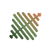
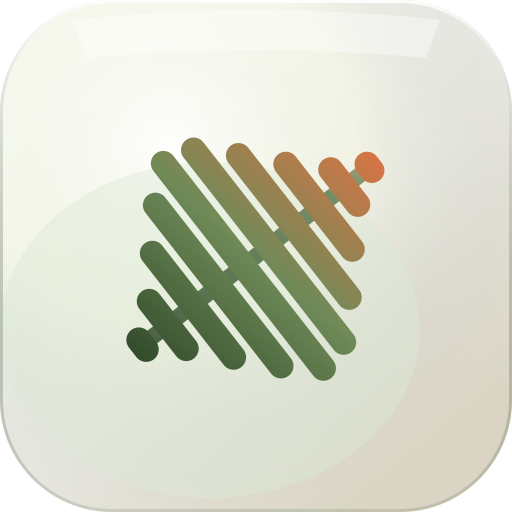

OpenVerb logo v2
No filled leaf shape: the waveform itself creates a narrower leaf silhouette, with a subtle diagonal vein for direction.

Lockup
Text remains editable in this pass; final production lockup should be outlined after typography is approved.
App icon
A macOS-style icon surface using the same waveform-leaf mark.
